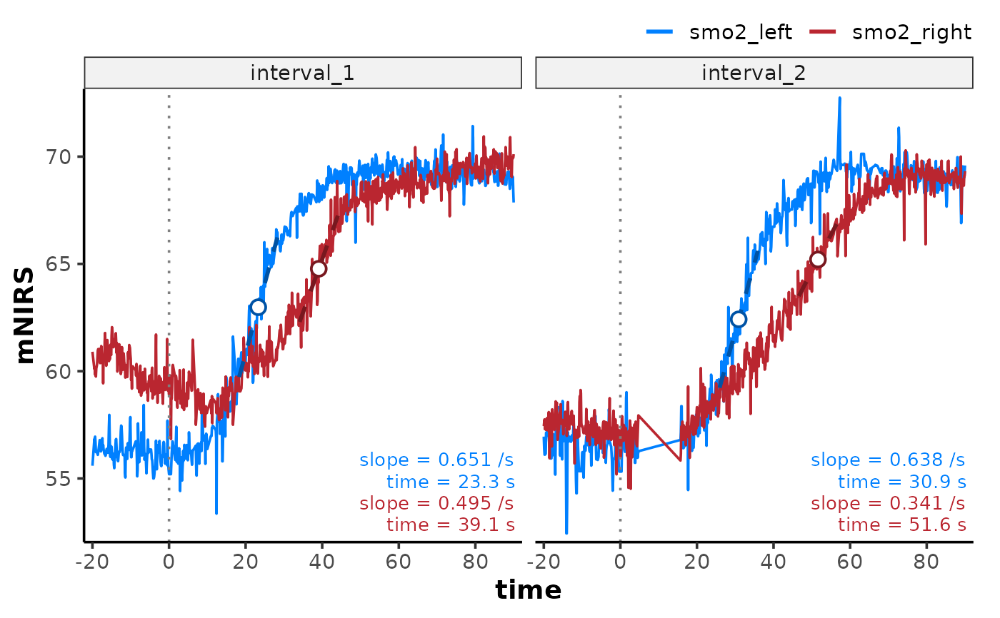

Analyse kinetics across mNIRS channels and intervals
Source:R/analyse_kinetics.R
analyse_kinetics.RdFit oxygenation kinetics (response time course) models with various parametric and non-parametric methods.
Usage
analyse_kinetics(
data,
nirs_channels = NULL,
time_channel = NULL,
method = c("response_time", "peak_slope", "monoexponential", "exponential_drift",
"biexponential", "sigmoidal", "sigmoidal_drift"),
start_time = NULL,
direction = c("auto", "positive", "negative"),
end_window = Inf,
group_intervals = "ensemble",
zero_time = FALSE,
verbose = TRUE,
...,
response_fraction = 0.5,
width = NULL,
span = NULL,
align = c("centre", "left", "right"),
partial = FALSE,
na.rm = FALSE,
use_TD = TRUE,
shape = c("symmetric", "gompertz", "gompertz_left"),
drift_fraction = NULL,
fix = NULL
)
analyze_kinetics(
data,
nirs_channels = NULL,
time_channel = NULL,
method = c("response_time", "peak_slope", "monoexponential", "exponential_drift",
"biexponential", "sigmoidal", "sigmoidal_drift"),
start_time = NULL,
direction = c("auto", "positive", "negative"),
end_window = Inf,
group_intervals = "ensemble",
zero_time = FALSE,
verbose = TRUE,
...
)Arguments
- data
A data frame, a list of data frames, or a grouped data frame of class "mnirs" containing time series data and metadata (see Details).
- nirs_channels
A character vector giving the names of mNIRS columns to operate on. Must match column names in
dataexactly.If
NULL(default), thenirs_channelsmetadata attribute ofdatais used.
- time_channel
A character string naming the time or sample column. Must match a column name in
dataexactly.If
NULL(default), thetime_channelmetadata attribute ofdatais used.
- method
A character string specifying the kinetics analysis method. Additional arguments must be specified for each method. See Details.
"response_time"Fractional (e.g. 50%, 63.2%, 90%) response time. Additional arguments:
response_fraction. Seeresponse_time()."peak_slope"Peak rolling linear regression slope. Additional arguments:
widthorspan,align,partial,na.rm. Seepeak_slope()."monoexponential"Monoexponential curve fit via
stats::nls(). Additional arguments:use_TD,fix,control. Seemonoexponential()."exponential_drift"Two-phase kinetics: monoexponential primary phase with a secondary linear drift, fit via
stats::nls(). Additional arguments:use_TD,drift_fraction,fix,control. Seeexponential_drift()."biexponential"Two-phase kinetics: overlapping fast primary and slow secondary exponential curves fit via
stats::nls(). Additional arguments:use_TD,fix,control. Seebiexponential()."sigmoidal"Logistic or Gompertz-family curve fit via
stats::nls(). Additional arguments:shape,fix,control. Seelogistic()."sigmoidal_drift"Two-phase kinetics: Logistic or Gompertz-family primary phase with a secondary linear drift, fit via
stats::nls(). Additional arguments:shape,drift_fraction,fix,control. Seesigmoidal_drift().
- start_time
A numeric value in units of
time_channelspecifying the response onset (effectively time =0of the fit). IfNULL(default), retrievesinterval_timesfrom "mnirs" metadata, or falls back to0or the first positive time value (see Details).- direction
A character string specifying the response direction
"positive", or"negative", or detect with"auto"(default). See Details.- end_window
A numeric value in units of
time_channelspecifying the window in which to look for the end of the kinetics fit; with no greater/ lesser values withinend_windowafter the first extrema (min/max).end_window = Inf(default) returns the global extreme from the full data range (see Details).For "biexponential",
end_windowbounds the fast-phase window only, and the default is30sec; the full model is then fit to the full data range.- group_intervals
Either
"ensemble"(default) to analyse all samples of each data frame together, or alist()of integer vectors of sample (row) numbers, each analysed as a separate interval, e.g.list(trial1 = 1:10, trial2 = 11:20).List names become interval names (
interval_<n>when unnamed) (see Details).- zero_time
Logical. Default is
FALSE. IfTRUE, re-basestime_channelvalues to start from zero within each interval orgroup_intervalsgroup.- verbose
Logical.
TRUE(default) will display, andFALSEwill silence warnings and information messages helpful for troubleshooting. Global default can be set viaoptions(mnirs.verbose = FALSE).- ...
Additional arguments passed to the underlying method function. See Details. For the
stats::nls()methods (monoexponential, exponential_drift, biexponential, sigmoidal, sigmoidal_drift),control = list()can be passed tostats::nls.control(), e.g.control = list(maxiter = 200), applied globally to all channels and intervals.- response_fraction
response_time: A numeric vector in the range
[0, 1]specifying the fractional response amplitude(s) to detect. Defaults to0.5(50% response, i.e. half-response time). Multiple values (e.g.c(0.5, 0.632)) return one coefficient row per fraction.- width
peak_slope: An integer defining the local window in number of samples around
idxin which to calculate slopes. Only one of eitherwidthorspanmust be defined.- span
peak_slope: A numeric value defining the local window time span in units of
time_channelaroundidxin which to calculate slopes. Only one of eitherwidthorspanmust be defined.- align
peak_slope: Window alignment as "centre"/"center" (the default), "left", or "right". Where "left" is forward looking, and "right" is backward looking from the current sample by the
widthorspan.- partial
peak_slope: Logical; default is
FALSE, requires local windows to have complete number of samples specified bywidthorspan. IfTRUE, processes local windows with at minimum two available samples. See Details.- na.rm
peak_slope: Logical; default is
FALSE, propagatesNAs to the returned vector and may return errors or warnings. IfTRUE, ignoresNAs and processes available valid samples within the local window. (see Details).- use_TD
monoexponential, exponential_drift, biexponential: Logical; default is
TRUE, attempts to fit the model with a "time-delay" parameterTDbetweenstart_timeand the response onset. Ifuse_TD = FALSEor the fit fails (with a warning), attempts to fall back to a reduced parameter model withoutTD.- shape
sigmoidal, sigmoidal_drift: Character; the 4-parameter sigmoidal shape to fit. One of
"symmetric"(default; inflection occurs at 50% amplitude),"gompertz"(early-inflection; 36.8%1/e), or"gompertz_left"(late-inflection; 63.2%1 - 1/e).- drift_fraction
exponential_drift, sigmoidal_drift: A numeric fraction of the primary amplitude in
(0.5, 1)at which the linear secondary drift begins, where the primary response reachesA + drift_fraction * (B - A). Default is0.95. Specify per-channel as a list keyed by channel name, e.g.drift_fraction = list(smo2 = 0.9). See Details.- fix
monoexponential, exponential_drift, biexponential, sigmoidal, sigmoidal_drift: An optional named list of model parameters (coefficients) to hold constant during fitting, e.g.
fix = list(A = 0)fixes the starting amplitude at0.Fixed parameters are excluded from estimation and returned as constant. Specify per-channel as a list of lists keyed by channel name, e.g.
fix = list(smo2 = list(A = 0)). See Details.
Value
A formatted table of results, with individual elements accessible as a structured list of class "mnirs_kinetics" containing:
methodThe method used, e.g.
"response_time".modelA named list of model objects (per interval, per
nirs_channel). For"peak_slope"; each element is an lm object. For parametric models; an nls object. For"response_time";NULL. Models are fitted on time elapsed fromstart_time, so predict expects atime_channelcolumn innewdatawith adjusted units. The offset for each interval can be retrieved fromcoefficients$start_time.coefficientsA data frame of coefficients with one row per
nirs_channelper interval, containinginterval,nirs_channels, the resolvedstart_time(the fit onset from which time coefficients are elapsed), and method-specific parameters. For methods with fallback options;modelnames the final method for each row.dataA list of the original input data frames augmented with a
*_fittedcolumn of fitted values for each processednirs_channel(e.g.smo2_fitted).interval_timesA data frame with one row per interval and numeric column
start_times– the resolved response onset used for fitting (the suppliedstart_time, else theextract_intervals()metadata, else 0 or the first positive time value) – andend_timeswhen any interval carries an end time from the metadata.diagnosticsA data frame of model diagnostics (
n_obs,n_params,r2,adj_r2,rmse,cv_rmse,snr,aic,aicc,bic) with one row pernirs_channelper interval.n_paramscounts the free parameters estimated by the solver, excluding any held byfix, so a reduced-parameter fallback fit is distinguishable from a full one.n_obsandn_paramsneed to be considered carefully when comparing fit diagnostics between models.channel_argsA data frame of the resolved arguments used for each
nirs_channelwith one row pernirs_channelper interval.warningsA data frame of warning and error messages captured during fitting, with columns
interval,nirs_channels(empty for interval-level warnings),type("warning"or"error"), andmessage; zero rows when none occurred. Conditions are captured regardless ofverbose, which controls console output only.callThe matched call.
Details
Data input formats
analyse_kinetics() accepts data in multiple formats:
A single "mnirs" data frame is processed as a single interval.
A list of "mnirs" data frames: each interval is processed separately.
A grouped "mnirs" data frame, e.g. with
dplyr::group_by(): the data frame is split by grouping levels and each group is processed as a separate interval.A special case for recursive analysis: The results from
analyse_kinetics()can be fed into a second call to analyse theresults$coefficientstable, split into data frames bynirs_channelwith one row per interval (see Recursive analysis).
Specified nirs_channels (or channels retrieved from "mnirs" metadata)
will be analysed and results returned as a formatted table.
Response start_time and the baseline window
start_time should be specified as the time point separating the
pre-response baseline (time_channel <= start_time) from the start of the
systematic response fit window (time_channel > start_time). This often
corresponds to a stimulus or start/end of an intervention (e.g. start/end
of an exercise interval).
For intervals extracted with extract_intervals(), start_time can be
retrieved from "mnirs" metadata. Otherwise start_time defaults to 0
or the first positive time_channel value.
All methods are fitted on time elapsed from start_time, so returned
time & duration coefficients are relative to response onset
(e.g. start_time = 0).
For "response_time", the baseline window before
start_timedefines the mean starting amplitudeAdirectly and anchors the start of theresponse_timeparameter.For "peak_slope",
start_timeanchors the start of thepeak_slope_timeparameter.For "exponential"- and "sigmoidal"-family, the baseline window before
start_timeanchors the starting fitted amplitudeAand the start ofTDandMRT, orxmidparameters. (see respective method sections below).
The time-delay models ("exponential"-family with use_TD = TRUE) are flat
at A before TD, so the pre-onset baseline is included in the fit and
anchors A. Their reduced forms (use_TD = FALSE, or a TD fit that
failed and fell back) have no such flat region and are fitted only where
time_channel >= start_time.
Response direction and the fit end_window
direction is detected automatically by default as either "positive"
(upward) or "negative" (downward) response, and can be overwritten
manually. end_window is a time span in units of time_channel defining
the end of the kinetics fitting window by locating the first extrema
(peak/trough, depending on direction) with no greater/lesser values
within the subsequent end_window time span. The curve fitting window
extends to the end of end_window beyond the detected extrema.
For "exponential"- and "sigmoidal"-family methods, direction also
constrains the sign of the fitted amplitude B - A, and the sigmoidal
slope. For the "biexponential" method, direction constrains the sign
of the fast-phase amplitude B - A. A fit that cannot satisfy the requested
direction returns NA coefficients with a warning.
Grouping samples with group_intervals
group_intervals = "ensemble" (the default) analyses every sample of
each data frame together as one interval. A list() of sample (row)
numbers instead splits each data frame into one interval per group, e.g.
for a 20-row data frame:
analyse_kinetics(
data,
method = "monoexponential",
group_intervals = list(trial1 = 1:10, trial2 = 11:20)
)List names become interval names; unnamed groups are
interval_<n>.Interval names are suffixed
<group>_<df>(e.g.trial1_A).For "mnirs_kinetics" results analysed recursively, the source
nirs_channelis prefixed to the analysed coefficient names (e.g.smo2_slope)Samples in no group are excluded from analysis (with a message). Samples in more than one group are allowed (with a warning).
Row-grouped intervals no longer correspond to their
extract_intervals()interval_timesmetadata, which is dropped, sostart_timefalls back to the first non-negativetime_channelvalue unless supplied explicitly (optionally per-interval, keyed by group name).zero_time = TRUErebases each group'stime_channelto its first sample, sostart_timethen defaults to0.Per-interval arguments key by the group names (see below).
Per-channel and per-interval arguments
Arguments apply globally to all nirs_channels by default. Arguments can
instead be uniquely supplied per-channel as a named list() with names
matching nirs_channels. For multi-interval input (a list of data frames or
a grouped data frame), a named list() can also be keyed by interval name
(the list names, group keys, or interval_<n>) to supply values
per-interval, and each per-interval value may itself be a per-channel
list(), e.g.
analyse_kinetics(
data,
nirs_channels = c(o2hb, hhb),
method = "peak_slope",
span = list(10, o2hb = 20),
direction = list(
interval_1 = list(hhb = "negative", "auto"),
interval_2 = "positive"
)
)The same rules apply at both levels:
A non-list value applies to every interval and channel (the default behaviour).
A
list()named by interval ornirs_channelsapplies to those values per-interval or per-channel.A single unnamed value in the list is the fallback applied to any unlisted intervals or channels (e.g.
span = list(10, o2hb = 20)giveso2hb20 and every other channel 10). If no unnamed fallback value in the list, unlisted intervals or channels fall back to the argument's default (i.e.NULL, or may fail with a warning).list()names matching neither interval names nornirs_channelsare warned about and ignored.
start_time, direction, and end_window are per-channel and per-interval
capable, along with the method-specific arguments except control, which
is always global. fix is itself a named list() of model parameters, so a
per-channel or per-interval fix is supplied as a list() of list()s
keyed by channel or interval name. A plain parameter list applies
everywhere:
## fix `A` at 0 for every channel
fix = list(A = 0)
## fix `A` per-channel, leaving unspecified channels free
fix = list(o2hb = list(A = 0), hhb = list(A = 5, B = 20))
## fix `A` per-interval, optionally nested per-channel
fix = list(interval_1 = list(A = 0))
fix = list(interval_1 = list(o2hb = list(A = 0)))Triple nested list()s is janky, but it works for now!
Limitation: method itself currently only accepts a single value applied
globally to all intervals and nirs_channels. So analysing channels or
intervals with entirely different kinetics models must be done with
independent analyse_kinetics() calls, or other iterative solutions
(e.g. lapply() or purrr::map()).
method = "response_time"
Aliases:
method = c("response time", "half recovery time", "half time", "HRT").
A non-parametric approach (estimated directly from the observed data without
assuming a specific mathematical shape) to estimate the response time at
which a signal reaches a specified fraction of its total response amplitude
relative to the baseline. e.g. half-response time
(response_fraction = 0.5) is the time from response onset to attain 50%
of the total amplitude change and approximates the inflection point
(xmid of a symmetrical sigmoid function).
response_fraction = 0.632 approximates the time constant (tau;
\(\tau\)) parameter from a monoexponential function, or the inflection
point (xmid) of an asymmetrical left-Gompertz function.
response_fraction = 0.368 approximates xmid of a right-Gompertz function.
This is a good fallback estimation method if parametric methods are not
successfully fit.
The target response value is: fitted = A + (B - A) * response_fraction
Where A is the mean baseline value (time_channel <= start_time) and B
is the first local extreme (peak or trough) value with no greater extreme
values within end_window. response_value is the first observed sample
where the signal is equal to or greater/lesser than the target
response_fitted value. response_time is the elapsed time from
start_time to response_value. See response_time() for the full
algorithm and coefficients.
method = "peak_slope"
Aliases: method = c("peak slope", "slope", "lm").
A semi-parametric approach to estimate the maximum positive or negative
local linear slope of a signal using rolling least-squares regression. The
steepest local rate of change in NIRS signals can be interpreted as the
moment of greatest mismatch between oxygen delivery and extraction.
peak_slope_time is the time from response onset start_time to this
moment of greatest mismatch.
The local window is defined by either width (number of samples) or span
(in units of time_channel). See peak_slope() for window mechanics,
partial-window behaviour, and the returned vector-level list.
method = "monoexponential"
Aliases: method = c("monoexp", "exponential", "exp", "tau", "MRT").
A parametric approach fitting a self-starting monoexponential function to
the response curve using stats::nls() with SSmonoexponential() for either
a 4-parameter (A, B, tau, TD) or 3-parameter (A, B, tau) model.
Model equations:
3-parameter:
A + (B - A) * (1 - exp(-t / tau))4-parameter:
A + (B - A) * (1 - exp(-pmax(t - TD, 0) / tau))
TD is the time delay from start_time to the onset of the exponential
response curve. tau is the time constant of the response. The
rate constant k is the reciprocal (k = 1 / tau). The
mean response time is the time sum MRT = TD + tau. See
monoexponential() for the model family and SSmonoexponential() for
self-start initialisation.
Any parameter may be held constant with fix, e.g. fix = list(A = 0).
This excludes them from the fit optimisation procedure, and effectively
reduces the function to a lower-parameter model. TD can only be fixed when
use_TD = TRUE and disables the 3-parameter fallback. It is recommended to
specify use_TD = FALSE rather than fix TD = 0.
method = "exponential_drift"
Aliases: method = c("exp_drift", "exp_linear", "monoexp_drift").
A parametric approach fitting a self-starting two-phase curve using
stats::nls() with SSexponential_drift(). A fast monoexponential()
primary response plus a slow linear secondary drift beginning near the
primary asymptote.
Model equation:
A + (B - A) * (1 - exp(-pmax(t - TD, 0) / tau)) + slope_B * pmax(t - TD + tau * log(1 - drift_fraction), 0)
A, B, tau, TD, and the derived k, MRT, and HRT are as for
"monoexponential". slope_B is the linear drift rate dx/dt. The drift
onset is not a free estimate. drift_fraction specifies the fraction
((0.5, 1)) of the primary response amplitude where the drift begins;
TD - tau * log(1 - drift_fraction) (default 0.95; TD + 3 * tau).
The excursion point texc is where the drift rate overtakes the decaying
primary rate, TD + tau * log(|B - A| / (|slope_B| * tau)), floored at the
drift onset, elapsed from start_time (the same frame as TD and MRT).
The drift component is kept only when the data support it. The model will
fall back to "monoexponential" when the fit fails or if the total drift
amplitude is below twice the fit RMSE, with a warning recorded in
warnings. The model column in coefficients names the final method
for each row. A hidden argument model_fallback = FALSE will override the
fallback process and retain the more complex model, or return an error.
Parameters may be held constant with fix, e.g. fix = list(A = 0), as
above.
method = "biexponential"
Aliases: method = c("biexp", "double exponential").
A parametric approach fitting a self-starting two-phase biexponential
excursion-recovery function to the response curve using stats::nls() with
SSbiexponential(). A fast primary component driving the initial
excursion, and a slow secondary component recovering the response toward
a stable plateau.
Model equations:
5-parameter:
A + (B - A) * (1 - exp(-t / tau)) + (B2 - B) * (1 - exp(-t / tau2))6-parameter, where
ts = pmax(t - TD, 0):A + (B - A) * (1 - exp(-ts / tau)) + (B2 - B) * (1 - exp(-ts / tau2))
A is the starting value. B & tau are the asymptote and time
constant of the fast response. B2 & tau2 are the asymptote and time
constant of the slower response plateau (typically tau2 >> tau).
Set use_TD = TRUE (default) to specify the time-delay parameter TD.
The fast-phase mean response time MRT = TD + tau is reported as for
"monoexponential". See biexponential() for the model family and
SSbiexponential() for self-start initialisation.
The two phases are fit sequentially.
Stage 1 fits the fast phase as a "monoexponential" on the supplied
end_windowwindow, givingA,tau, andTD(if selected).Stage 2 fits the full model to the whole response with
A,tau, andTDheld within a tight range of their stage-1 values, andB,B2,tau2free.
Secondary tau2 is floored above the primary tau, so the phases stay
separated. tau2 is arbitrarily capped at ten times the fit window
timespan, functionally implying the true asymptote is linear not exponential.
end_window should be set to isolate the fast phase; by default resolves
to 30 sec instead of Inf (recorded in channel_args).
The biexponential fit is kept only when the data support both phases. The
model will fall back to "exponential_drift" when the fit fails (e.g.
phases not separable), the fitted response is monotonic (no estimable
excursion point texc), tau2 exceeds twice the fitted time span (a slow
phase the record cannot tell from a linear drift), or the slow-phase
amplitude |B2 - B| is below twice the fit RMSE.
The exponential-drift fit is in turn subject to its own fallback to
"monoexponential" (see above). Each fallback is warned about and recorded
in warnings. The model column in coefficients names the final method
for each row. A hidden argument model_fallback = FALSE will override the
fallback process and retain the more complex model, or return an error.
Parameters may be held constant with fix, e.g. fix = list(A = 0), as
above.
method = "sigmoidal"
Aliases: method = c("logistic", "gompertz", "xmid").
A parametric approach fitting a self-starting 4-parameter sigmoidal function
to the response curve using stats::nls() in one of three shapes.
Model equations (all 4-parameter):
shape = "symmetric"(SSlogistic()):A + (B - A) / (1 + exp(-4 * slope * (t - xmid) / (B - A)))shape = "gompertz"(SSgompertz()):A + (B - A) * exp(-exp(-k * (t - xmid)))withk = slope * e / (B - A). Early-acceleration; inflection height fixed atA + (B - A) / e; 36.8% of the amplitude.shape = "gompertz_left"(SSgompertz_left()):A + (B - A) * (1 - exp(-exp(k * (t - xmid))))withk = slope * e / (B - A). Late-acceleration; inflection height fixed atA + (B - A) * (1 - 1/e); 63.2% of the amplitude.
xmid is the time from start_time to the inflection point; the steepest
point of the response. slope is the response rate dx/dt at the
inflection.
A "symmetric" shape is the default when no obvious asymmetry is expected.
"gompertz" (right-inflection) growth is appropriate for fast-onset,
slow-tail responses. "gompertz_left" for slow-onset, fast-tail responses.
See logistic(), gompertz(), and gompertz_left() for the model families
and SSlogistic(), SSgompertz(), and SSgompertz_left() for self-start
initialisations.
Parameters may be held constant with fix, e.g. fix = list(A = 0), as
above.
method = "sigmoidal_drift"
Aliases: method = c("sigmoid_drift", "sig_drift", "sig-lin", "logistic_drift", "gompertz_drift").
A parametric approach fitting a self-starting two-phase curve using
stats::nls() with SSsigmoidal_drift(). A fast "sigmoidal"
primary response of the given shape plus a slow linear secondary drift
beginning near the primary ending asymptote.
Model equation:
S(t) + slope_B * pmax(t - onset, 0)
S(t) and A, B, xmid, and slope are as for "sigmoidal".
slope_B is the linear drift rate dx/dt at the asymptote B. The
drift is not a free estimate. drift_fraction specifies the fraction
((0.5, 1)) of the primary response amplitude where the drift begins
(default 0.95).
The excursion point texc is where the drift rate overtakes the decaying
primary rate, |S'(t)| = |slope_B|, floored at the drift onset, elapsed
from start_time (the same frame as xmid).
The drift component is kept only when the data support it. The model will
fall back to "sigmoidal" when the fit fails or if the total drift
amplitude is below twice the fit RMSE, with a warning recorded in
warnings. The model column in coefficients names the final method
for each row. A hidden argument model_fallback = FALSE will override the
fallback process and retain the more complex model, or return an error.
Parameters may be held constant with fix, e.g. fix = list(A = 0), as
above.
Recursive analysis
An "mnirs_kinetics" result may be passed back as data to analyse how
coefficients change across intervals, e.g.
analyse_kinetics(result, nirs_channels = tau, time_channel = start_time, method = "peak_slope"). nirs_channels and time_channel must name
coefficient columns explicitly; no metadata defaults are applied.
Time-point coefficients (response_time, peak_slope_time, TD, MRT,
HRT, texc, xmid) are elapsed from each interval's start_time. When
one of these is given as time_channel, start_time is added row-wise so
the analysis runs on absolute time. start_time itself and duration
coefficients (e.g. tau) are unchanged.
Coefficient rows from separate trials can be analysed separately with
group_intervals, e.g. 20 occlusion slopes from two trials:
analyse_kinetics(
result,
nirs_channels = slope,
time_channel = peak_slope_time,
method = "monoexponential",
group_intervals = list(trial1 = 1:10, trial2 = 11:20)
)Examples
result <- read_mnirs(
file_path = example_mnirs("train.red"),
nirs_channels = c(
smo2_left = "SmO2 unfiltered",
smo2_right = "SmO2 unfiltered"
),
time_channel = c(time = "Timestamp (seconds passed)"),
zero_time = TRUE,
verbose = FALSE
) |>
resample_mnirs(method = "linear", verbose = FALSE) |>
extract_intervals(
group_intervals = "distinct",
start = by_time(368, 1084),
span = c(-20, 90),
zero_time = TRUE,
verbose = FALSE
) |>
analyse_kinetics(
nirs_channels = c(smo2_left, smo2_right),
method = "peak_slope",
span = 10, ## 10-second rolling window
direction = "auto", ## auto-detect slope direction
verbose = FALSE
)
## formatted table of results
result
#>
#> Peak Linear Response Rate
#> Model Coefficients:
#> interval nirs_channels slope intercept peak_slope_time
#> 1 interval_1 smo2_left 0.6508 47.82 23.3
#> 2 interval_1 smo2_right 0.4952 45.41 39.1
#> 3 interval_2 smo2_left 0.6376 42.71 30.9
#> 4 interval_2 smo2_right 0.3409 47.61 51.6
#>
#>
## coefficients are accessible from the result list
result$coefficients
#> interval nirs_channels start_time slope intercept fitted
#> 1 interval_1 smo2_left 0 0.6507819 47.81776 62.98098
#> 2 interval_1 smo2_right 0 0.4952500 45.40962 64.77390
#> 3 interval_2 smo2_left 0 0.6376464 42.71328 62.41656
#> 4 interval_2 smo2_right 0 0.3409474 47.61278 65.20566
#> peak_slope_time idx
#> 1 23.3 434
#> 2 39.1 592
#> 3 30.9 510
#> 4 51.6 717
## along with diagnostics and other returned objects
result$diagnostics
#> interval nirs_channels n_obs n_params r2 adj_r2 rmse
#> 1 interval_1 smo2_left 101 2 0.9036017 0.9026280 0.6197138
#> 2 interval_1 smo2_right 101 2 0.8501018 0.8485877 0.6063126
#> 3 interval_2 smo2_left 101 2 0.9043816 0.9034158 0.6044832
#> 4 interval_2 smo2_right 101 2 0.8251746 0.8234086 0.4575370
#> cv_rmse snr aic aicc bic
#> 1 0.009839698 10.159306 195.9691 196.2165 203.8144
#> 2 0.009360447 8.242037 191.5530 191.8004 199.3983
#> 3 0.009684661 10.194586 190.9425 191.1900 198.7879
#> 4 0.007016830 7.573953 134.6823 134.9297 142.5276
## plot results
plot(result)
